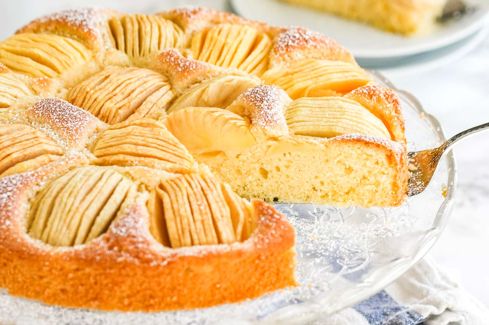

German Apple Cake

This scrumptious dish will make you wish you were German.
Full recipe here
Ingredients
- 1 cup vegetable oil
- 2 large eggs
- 2 cups white sugar
- 1 teaspoon vanilla extract
- 2 cups all-purpose flour
- 2 teaspoons ground cinnamon
- 1 teaspoon baking soda
- 1/2 teaspoon salt
- 4 cups apples - peeled, cored, and diced
Steps
- Preheat the oven to 350 degrees F (175 degrees C). Grease and flour a 9x13-inch cake pan.
- Beat oil and eggs in a mixing bowl with an electric mixer until creamy. Add sugar and vanilla; beat well.
- Stir together flour, cinnamon, baking soda, and salt in a bowl. Slowly add flour mixture to egg mixture; mix until combined. The batter will be very thick. Fold in apples by hand using a wooden spoon. Spread batter into the prepared pan.
- Bake cake in the preheated oven until a toothpick inserted into the center comes out clean, about 45 minutes. Cool cake on a wire rack.
Enjoy!